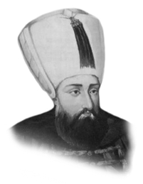

SULTAN İBRAHİM
Annesi : Kösem Sultan
Doğumu : 5 Kasım 1616
Vefatı : 18 Ağustos 1648
Saltanatı : 1640 - 1648 (8 yıl)
Sultan İbrahim, İstanbul’da doğdu. Uzun boylu, kuvvetli vücutlu ve kumral sakallı idi. Annesi onun iyi yetişmesi için çok gayret göstermişti. Devrinde yaşayan bazı kindar yazarların dediği gibi deli değildi.
Kardeşi IV. Murat’ın vefatı üzerine tahta çıkmış ve tahta çıkışında şöyle demişti: “Elhamdülillah Ya Rabbi! Benim gibi zaif kulunu bu makama lâyık gördün. Ya Rab! Saltanat günlerimde milletimin halini hoş eyle ve birbirimizden hoşnut kıl.”
Sultan İbrahim tahta çıktığında Osmanlıların hayatta kalan tek erkek ferdi idi. Bir yıl sonra ancak IV. Mehmet ve diğerleri dünyaya geldiler. Böylece hanedan kesilmekten kurtuldu. İlk zamanlarında yeniçeri zorbalarıyla uğraştı. Fakat zaman geçtikçe dalkavuk vezirlerin tesiri altında kalmaktan kendini kurtaramadı. Hakkındaki çirkin iftiralar ise, padişahı şehit edenler tarafından kendilerini haklı görmeleri için uydurulmuş yalanlardı.
Sultan İbrahim çok şiddetli bir baş ağrısı çekiyordu. Meşhur tarihçi Peçevi ve Evliya Çelebi son yıllarını Sultan İbrahim devrinde tamamlamışlardır. 1645 yılında Venediklilerle Girit Savaşı başladı. Aynı yıl Hanya ve Resmo fethedildi. 1646’da Kandiye Kalesi kuşatıldı. 1648’de Kandiye teslim oldu. Bu yıl da İstanbul’da yeni bir ihtilâl daha patlak verdi ve Sultan İbrahim tahtından indirilerek şehit edildi.
Erkek çocukları: IV. Mehmet, II. Süleyman, II. Ahmet, Orhan, Beyazıt, Cihangir, Selim, Murat.
Kız çocukları: Ümmü Gülsüm, Peykân, Atike, Ayşe, Gevherhan.